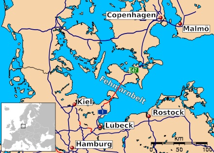

Der Fehmarnbelt Tunnel – Der längste Absenktunnel der Welt

Der Fehmarnbelt-Tunnel ist ein beeindruckendes Infrastrukturprojekt, das die deutsche Insel Fehmarn mit der dänischen Insel Lolland verbinden wird. Er soll 2029 fertiggestellt werden und wird 18 km lang sein, einschließlich einer vierspurigen Autobahn, einer zweigleisigen Eisenbahnstrecke und Servicetunneln. Die Gesamtkosten werden auf 7 Milliarden Euro geschätzt und werden hauptsächlich von Dänemark finanziert, aber auch die Europäische Union hat Hunderte von Millionen Euro beigesteuert.
Warum is diese Tunnel wichtig?
Derzeit ist die einzige Landverbindung zwischen Skandinavien und Kontinentaleuropa die dänische E20-E45-Route, die sich von der Öresundbrücke bis zur deutschen Grenze erstreckt. Das bedeutet, dass der gesamte Straßen- und Schienengüterverkehr aus Skandinavien diese Route nehmen muss, um Zugang zu den größeren europäischen Märkten zu erhalten.
Der Tunnel wird daher eine schnellere und zuverlässigere Route für den Güterverkehr bieten. Er wird die Warenströme zwischen Skandinavien und Kontinentaleuropa erleichtern und damit die wirtschaftlichen Beziehungen und die Integration innerhalb der Europäischen Union stärken. Außerdem wird er eine erhebliche Entlastung der bestehenden Verkehrswege bewirken und 500 km an Fahrtstrecke einsparen.
Der Tunnel wird Teil des TEN-T (Trans-European Transport Network) sein, das „einen effizienten Personen- und Güterverkehr fördert, den Zugang zu Arbeitsplätzen und Dienstleistungen sicherstellt und Handel und Wirtschaftswachstum ermöglicht. Es stärkt den wirtschaftlichen, sozialen und territorialen Zusammenhalt der EU und schafft nahtlose Verkehrssysteme über die Grenzen hinweg, ohne Lücken, Engpässe oder fehlende Verbindungen“ (Europäische Kommission). Das TEN-T-Netz erstreckt sich von Narvik (Norwegen) bis nach Malta und Zypern und deckt den größten Teil des europäischen Kontinents ab.
Es gibt einige Probleme:
Naturschützer befürchten, dass der Bau des Tunnels erhebliche Auswirkungen auf die Tierwelt im Fehmarnbelt haben wird. Die Bauarbeiten könnten die Lebensräume lokaler Arten, darunter Fische, Vögel und Meeressäuger, beeinträchtigen und die Wasserqualität und die lokalen Ökosysteme in der Meerenge schädigen. Die Gemeinden auf Fehmarn und Lolland befürchten, dass der zunehmende Verkehr Lärm und Verschmutzung mit sich bringt und die Lebensqualität in der Region insgesamt beeinträchtigt. Sie befürchten auch, dass Touristen, die früher in ihren Städten Halt gemacht haben, jetzt direkt weiterfahren, ohne sie zu besuchen. Einige Deutsche haben sogar gescherzt, dass der Tunnel lange vor dem Ausbau der Autobahn Lübeck-Hamburg fertig sein wird.
Lokale und regionale Disharmonie:
Diese Diskussion zeigt die Disharmonie zwischen den Ambitionen der Europäischen Union und den Präferenzen der lokalen Gemeinschaften. Die Europäische Union steht unter dem Druck, die skandinavischen und arktischen Volkswirtschaften in ihre größeren Märkte zu integrieren, um die Abhängigkeit von internationalen Importen zu verringern. Beispielsweise importiert sie derzeit 98 % ihrer Seltenen Erden aus China, und angesichts der Entwicklungen in der globalen Geopolitik möchte die Union einige ihrer wichtigsten Märkte an Land ziehen. Die Eisenerzmine in Kiruna - die größte der Welt - ist ein perfektes Beispiel dafür. Die EU muss diese Märkte in ihre Gesamtwirtschaft integrieren. Infrastrukturprojekte sind jedoch mit lokalen Kosten verbunden. Gemeinden, die durch ihren Bau gestört werden, müssen um des größeren EU-Wohls willen leiden. Die friedliche Insel Fehmarn wird bald durch die geschätzten 10.000 Autos, 4.000 Lastwagen, 60 Personenzüge und 50 Güterzüge, die die Passage täglich benutzen werden, gestört werden. Vielleicht ist dies nur ein Zeichen der Zeit.